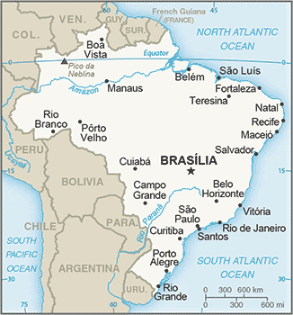
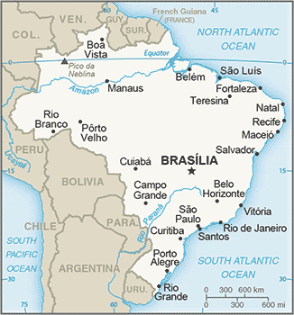

South America :: BRAZIL
Introduction :: BRAZIL
-
Following more than three centuries under Portuguese rule, Brazil gained its independence in 1822, maintaining a monarchical system of government until the abolition of slavery in 1888 and the subsequent proclamation of a republic by the military in 1889. Brazilian coffee exporters politically dominated the country until populist leader Getulio VARGAS rose to power in 1930. By far the largest and most populous country in South America, Brazil underwent more than a half century of populist and military government until 1985, when the military regime peacefully ceded power to civilian rulers. Brazil continues to pursue industrial and agricultural growth and development of its interior. Having successfully weathered a period of global financial difficulty in the late 20th century, Brazil was seen as one of the world’s strongest emerging markets and a contributor to global growth. The awarding of the 2014 FIFA World Cup and 2016 Summer Olympic Games, the first ever to be held in South America, was seen as symbolic of the country’s rise. However, since about 2013, Brazil has been plagued by a shrinking economy, growing unemployment, and rising inflation. Political scandal resulted in the impeachment of President Dilma ROUSSEFF in May 2016, a conviction that was upheld by the Senate in August 2016; her vice president, Michel TEMER, will serve as president until 2018, completing her second term.
Geography :: BRAZIL
-
Eastern South America, bordering the Atlantic Ocean10 00 S, 55 00 WSouth Americatotal: 8,515,770 sq kmland: 8,358,140 sq kmwater: 157,630 sq kmnote: includes Arquipelago de Fernando de Noronha, Atol das Rocas, Ilha da Trindade, Ilhas Martin Vaz, and Penedos de Sao Pedro e Sao Paulocountry comparison to the world: 5slightly smaller than the UStotal: 16,145 kmborder countries (10): Argentina 1,263 km, Bolivia 3,403 km, Colombia 1,790 km, French Guiana 649 km, Guyana 1,308 km, Paraguay 1,371 km, Peru 2,659 km, Suriname 515 km, Uruguay 1,050 km, Venezuela 2,137 km7,491 kmterritorial sea: 12 nmcontiguous zone: 24 nmexclusive economic zone: 200 nmcontinental shelf: 200 nm or to edge of the continental marginmostly tropical, but temperate in southmostly flat to rolling lowlands in north; some plains, hills, mountains, and narrow coastal beltmean elevation: 320 melevation extremes: lowest point: Atlantic Ocean 0 mhighest point: Pico da Neblina 2,994 mbauxite, gold, iron ore, manganese, nickel, phosphates, platinum, tin, rare earth elements, uranium, petroleum, hydropower, timberagricultural land: 32.9%arable land 8.6%; permanent crops 0.8%; permanent pasture 23.5%forest: 61.9%other: 5.2% (2011 est.)54,000 sq km (2012)the vast majority of people live along, or relatively near, the Atlantic coast in the east; the population core is in the southeast, anchored by the cities of Sao Paolo, Brazilia, and Rio de Janeirorecurring droughts in northeast; floods and occasional frost in southdeforestation in Amazon Basin destroys the habitat and endangers a multitude of plant and animal species indigenous to the area; there is a lucrative illegal wildlife trade; air and water pollution in Rio de Janeiro, Sao Paulo, and several other large cities; land degradation and water pollution caused by improper mining activities; wetland degradation; severe oil spillsparty to: Antarctic-Environmental Protocol, Antarctic-Marine Living Resources, Antarctic Seals, Antarctic Treaty, Biodiversity, Climate Change, Climate Change-Kyoto Protocol, Desertification, Endangered Species, Environmental Modification, Hazardous Wastes, Law of the Sea, Marine Dumping, Ozone Layer Protection, Ship Pollution, Tropical Timber 83, Tropical Timber 94, Wetlands, Whalingsigned, but not ratified: none of the selected agreementslargest country in South America and in the Southern Hemisphere; shares common boundaries with every South American country except Chile and Ecuador
People and Society :: BRAZIL
-
205,823,665 (July 2016 est.)country comparison to the world: 6noun: Brazilian(s)adjective: Brazilianwhite 47.7%, mulatto (mixed white and black) 43.1%, black 7.6%, Asian 1.1%, indigenous 0.4% (2010 est.)Portuguese (official and most widely spoken language)note: less common languages include Spanish (border areas and schools), German, Italian, Japanese, English, and a large number of minor Amerindian languagesRoman Catholic 64.6%, other Catholic 0.4%, Protestant 22.2% (includes Adventist 6.5%, Assembly of God 2.0%, Christian Congregation of Brazil 1.2%, Universal Kingdom of God 1.0%, other Protestant 11.5%), other Christian 0.7%, Spiritist 2.2%, other 1.4%, none 8%, unspecified 0.4% (2010 est.)Brazil's rapid fertility decline since the 1960s is the main factor behind the country's slowing population growth rate, aging population, and fast-paced demographic transition. Brasilia has not taken full advantage of its large working-age population to develop its human capital and strengthen its social and economic institutions but is funding a study abroad program to bring advanced skills back to the country. The current favorable age structure will begin to shift around 2025, with the labor force shrinking and the elderly starting to compose an increasing share of the total population. Well-funded public pensions have nearly wiped out poverty among the elderly, and Bolsa Familia and other social programs have lifted tens of millions out of poverty. More than half of Brazil's population is considered middle class, but poverty and income inequality levels remain high; the Northeast, North, and Center-West, women, and black, mixed race, and indigenous populations are disproportionately affected. Disparities in opportunities foster social exclusion and contribute to Brazil's high crime rate, particularly violent crime in cities and favelas.Brazil has traditionally been a net recipient of immigrants, with its southeast being the prime destination. After the importation of African slaves was outlawed in the mid-19th century, Brazil sought Europeans (Italians, Portuguese, Spaniards, and Germans) and later Asians (Japanese) to work in agriculture, especially coffee cultivation. Recent immigrants come mainly from Argentina, Chile, and Andean countries (many are unskilled illegal migrants) or are returning Brazilian nationals. Since Brazil's economic downturn in the 1980s, emigration to the United States, Europe, and Japan has been rising but is negligible relative to Brazil's total population. The majority of these emigrants are well-educated and middle-class. Fewer Brazilian peasants are emigrating to neighboring countries to take up agricultural work.0-14 years: 22.79% (male 23,905,185/female 22,994,222)15-24 years: 16.43% (male 17,146,060/female 16,661,163)25-54 years: 43.84% (male 44,750,568/female 45,489,430)55-64 years: 8.89% (male 8,637,011/female 9,656,370)65 years and over: 8.06% (male 7,059,944/female 9,523,712) (2016 est.)total dependency ratio: 44.7%youth dependency ratio: 33.3%elderly dependency ratio: 11.3%potential support ratio: 8.8% (2015 est.)total: 31.6 yearsmale: 30.7 yearsfemale: 32.4 years (2016 est.)country comparison to the world: 1040.75% (2016 est.)country comparison to the world: 14514.3 births/1,000 population (2016 est.)country comparison to the world: 1366.6 deaths/1,000 population (2016 est.)country comparison to the world: 143-0.1 migrant(s)/1,000 population (2016 est.)country comparison to the world: 109the vast majority of people live along, or relatively near, the Atlantic coast in the east; the population core is in the southeast, anchored by the cities of Sao Paolo, Brazilia, and Rio de Janeirourban population: 85.7% of total population (2015)rate of urbanization: 1.17% annual rate of change (2010-15 est.)Sao Paulo 21.066 million; Rio de Janeiro 12.902 million; Belo Horizonte 5.716 million; BRASILIA (capital) 4.155 million; Fortaleza 3.88 million; Recife 3.739 million (2015)at birth: 1.05 male(s)/female0-14 years: 1.04 male(s)/female15-24 years: 1.03 male(s)/female25-54 years: 0.98 male(s)/female55-64 years: 0.89 male(s)/female65 years and over: 0.74 male(s)/femaletotal population: 0.97 male(s)/female (2016 est.)44 deaths/100,000 live births (2015 est.)country comparison to the world: 103total: 18 deaths/1,000 live birthsmale: 21.2 deaths/1,000 live birthsfemale: 14.7 deaths/1,000 live births (2016 est.)country comparison to the world: 94total population: 73.8 yearsmale: 70.2 yearsfemale: 77.5 years (2016 est.)country comparison to the world: 1271.76 children born/woman (2016 est.)country comparison to the world: 16080.3% (2006)8.3% of GDP (2014)country comparison to the world: 311.89 physicians/1,000 population (2013)2.3 beds/1,000 population (2012)improved:urban: 100% of populationrural: 87% of populationtotal: 98.1% of populationunimproved:urban: 0% of populationrural: 13% of populationtotal: 1.9% of population (2015 est.)improved:urban: 88% of populationrural: 51.5% of populationtotal: 82.8% of populationunimproved:urban: 12% of populationrural: 48.5% of populationtotal: 17.2% of population (2015 est.)0.58% (2015 est.)country comparison to the world: 62826,700 (2015 est.)country comparison to the world: 1315,300 (2015 est.)country comparison to the world: 17degree of risk: very highfood or waterborne diseases: bacterial diarrhea and hepatitis Avectorborne diseases: dengue fever and malariawater contact disease: schistosomiasisnote: active local transmission of Zika virus by Aedes species mosquitoes has been identified in this country (as of August 2016); it poses an important risk (a large number of cases possible) among US citizens if bitten by an infective mosquito; other less common ways to get Zika are through sex, via blood transfusion, or during pregnancy, in which the pregnant woman passes Zika virus to her fetus (2016)20.1% (2014)country comparison to the world: 1022.2% (2007)country comparison to the world: 1215.9% of GDP (2012)country comparison to the world: 49definition: age 15 and over can read and writetotal population: 92.6%male: 92.2%female: 92.9% (2015 est.)total: 15 yearsmale: 15 yearsfemale: 16 years (2013)total number: 959,942percentage: 3%note: data represent children ages 5-13 (2009 est.)total: 15%male: 12.3%female: 18.7% (2013 est.)country comparison to the world: 76
Government :: BRAZIL
-
conventional long form: Federative Republic of Brazilconventional short form: Brazillocal long form: Republica Federativa do Brasillocal short form: Brasiletymology: the country name derives from the brazilwood tree that used to grow plentifully along the coast of Brazil and that was used to produce a deep red dyefederal presidential republicname: Brasiliageographic coordinates: 15 47 S, 47 55 Wtime difference: UTC-3 (2 hours ahead of Washington, DC, during Standard Time)daylight saving time: +1hr, begins third Sunday in October; ends third Sunday in Februarynote: Brazil has three time zones, including one for the Fernando de Noronha Islands26 states (estados, singular - estado) and 1 federal district* (distrito federal); Acre, Alagoas, Amapa, Amazonas, Bahia, Ceara, Distrito Federal*, Espirito Santo, Goias, Maranhao, Mato Grosso, Mato Grosso do Sul, Minas Gerais, Para, Paraiba, Parana, Pernambuco, Piaui, Rio de Janeiro, Rio Grande do Norte, Rio Grande do Sul, Rondonia, Roraima, Santa Catarina, Sao Paulo, Sergipe, Tocantins7 September 1822 (from Portugal)Independence Day, 7 September (1822)several previous; latest ratified 5 October 1988; amended many times, last in 2016 (2016)civil law; note - a new civil law code was enacted in 2002 replacing the 1916 codehas not submitted an ICJ jurisdiction declaration; accepts ICCt jurisdictioncitizenship by birth: yescitizenship by descent: yesdual citizenship recognized: yesresidency requirement for naturalization: 4 yearsvoluntary between 16 to 18 years of age and over 70; compulsory between 18 to 70 years of age; note - military conscripts by law cannot votechief of state: President Michel Miguel Elias TEMER Lulia (since 31 August 2016); Vice President (vacant); note - the president is both chief of state and head of governmenthead of government: President Michel Miguel Elias TEMER Lulia (since 31 August 2016); Vice President (vacant)cabinet: Cabinet appointed by the presidentelections/appointments: president and vice president directly elected on the same ballot by absolute majority popular vote in 2 rounds if needed for a single 4-year term (eligible for a second term); election last held on 5 October 2014 with runoff on 26 October 2014 (next to be held October 2018)election results: Dilma ROUSSEFF reelected president in a runoff election; percent of vote - Dilma ROUSSEFF (PT) 51.6%, Aecio NEVES (PSDB) 48.4%note: on 12 May 2016, Brazil's Senate voted to hold an impeachment trial of President Dilma ROUSSEFF, who was then suspended from her executive duties; Vice President Michel TEMER then took over as acting president; on 31 August 2016 the Senate voted 61-20 in favor of conviction; TEMER will now serve as president for the remainder of ROUSSEFF's term until 1 January 2019description: bicameral National Congress or Congresso Nacional consists of the Federal Senate or Senado Federal (81 seats; 3 members each from 26 states and 3 from the federal district directly elected in multi-seat constituencies by simple majority vote to serve 8-year terms, with one-third and two-thirds of the membership elected alternately every 4 years) and the Chamber of Deputies or Camara dos Deputados (513 seats; members directly elected in multi-seat constituencies by proportional representation vote to serve 4-year terms)elections: Federal Senate - last held on 5 October 2014 for one-third of the Senate (next to be held in October 2018 for two-thirds of the Senate); Chamber of Deputies - last held on 5 October 2014 (next to be held in October 2018)election results: Federal Senate - percent of vote by party - NA; seats by party - PMDB 5, PSDB 4, PDT 4, PSB 3, DEM (formerly PFL) 3, PT 2, PSD 2, PTB 2, PP 1, PR 1; Chamber of Deputies - percent of vote by party - NA; seats by party - PT 70, PMDB 66, PSDB 54, PSD 37, PP 36, PR 34, PSB 34, PTB 25, DEM (formerly PFL) 22, PRB 21, PDT 19, SD 15, PSC 12, PROS 11, PCdoB 10, PPS 10, PV 8, PHS 5, PSOL 5, PTN 4, PMN 3, PRP 3, PEN 2, PTC 2, PSDC 2, PTdoB 1, PSL 1, PRTB 1highest court(s): Supreme Federal Court or Supremo Tribunal Federal (consists of 11 justices)judge selection and term of office: justices appointed by the president and approved by the Federal Senate; justices appointed to serve until mandatory retirement at age 75subordinate courts: Tribunal of the Union, Federal Appeals Court, Superior Court of Justice, Superior Electoral Court, regional federal courts; state court systemBrazilian Communist Party or PCB [Ivan Martins PINHEIRO]Brazilian Democratic Movement Party or PMDB [Michel TEMER]Brazilian Labor Party or PTB [Cristiane BRASIL]Brazilian Renewal Labor Party or PRTB [Jose Levy FIDELIX da Cruz]Brazilian Republican Party or PRB [Marcos Antonio PEREIRA]Brazilian Social Democracy Party or PSDB [Aecio NEVES]Brazilian Socialist Party or PSB [Carlos Roberto SIQUEIRA de Barros]Christian Labor Party or PTC [Daniel TOURINHO]Christian Social Democratic Party or PSDC [Jose Maria EYMAEL]Communist Party of Brazil or PCdoB [Jose Renato RABELO]Democratic Labor Party or PDT [Carlos Roberto LUPI]The Democrats or DEM [Jose AGRIPINO] (formerly Liberal Front Party or PFL)Free Homeland Party or PPL [Sergio RUBENS]Green Party or PV [Jose Luiz PENNA]Humanist Party of Solidarity or PHS [Eduardo MACHADO]Labor Party of Brazil or PTdoB [Luis Henrique de Oliveira RESENDE]National Ecologic Party or PEN [Adilson Barroso OLIVEIRA]National Labor Party or PTN [Jose Masci de ABREU]National Mobilization Party or PMN [Telma RIBEIRO dos Santos]Party of the Republic or PR [Alfredo NASCIMENTO]Popular Socialist Party or PPS [Roberto Joao Pereira FREIRE]Progressive Party or PP [Ciro NOGUEIRA]Progressive Republican Party or PRP [Ovasco Roma Altimari RESENDE]Republican Social Order Party or PROS [Euripedes JUNIOR]Social Christian Party or PSC [Vitor Jorge Abdala NOSSEIS]Social Democratic Party or PSD [Guilherme CAMPOS]Social Liberal Party or PSL [Luciano Caldas BIVAR]Socialism and Freedom Party or PSOL [Luiz ARAUJO]Solidarity or SD [Paulo PEREIRA DA SILVA]United Socialist Workers' Party or PSTU [Jose Maria DE ALMEIDA]Workers' Cause Party or PCO [Rui Costa PIMENTA]Workers' Party or PT [Rui FALCAO]Landless Workers' Movement or MSTother: industrial federations; labor unions and federations; large farmers' associations; religious groups including evangelical Christian churches and the Catholic ChurchAfDB (nonregional member), BIS, BRICS, CAN (associate), CD, CELAC, CPLP, FAO, FATF, G-15, G-20, G-24, G-5, G-77, IADB, IAEA, IBRD, ICAO, ICC (national committees), ICCt, ICRM, IDA, IFAD, IFC, IFRCS, IHO, ILO, IMF, IMO, IMSO, Interpol, IOC, IOM, IPU, ISO, ITSO, ITU, ITUC (NGOs), LAES, LAIA, LAS (observer), Mercosur, MIGA, MINURSO, MINUSTAH, MONUSCO, NAM (observer), NSG, OAS, OECD (Enhanced Engagement, OPANAL, OPCW, Paris Club (associate), PCA, SICA (observer), UN, UNASUR, UNCTAD, UNESCO, UNFICYP, UNHCR, UNIDO, UNIFIL, Union Latina, UNISFA, UNITAR, UNMIL, UNMISS, UNOCI, UNRWA, UNWTO, UPU, WCO, WFTU (NGOs), WHO, WIPO, WMO, WTOchief of mission: Ambassador Sergio Silva do AMARAL (since 16 September 2016)chancery: 3006 Massachusetts Avenue NW, Washington, DC 20008telephone: [1] (202) 238-2700FAX: [1] (202) 238-2827consulate(s) general: Atlanta, Boston, Chicago, Hartford (CT), Houston, Los Angeles, Miami, New York, San Francisco, Washington, DCchief of mission: Ambassador Liliana AYALDE (since 31 October 2013)embassy: Avenida das Nacoes, Quadra 801, Lote 3, Distrito Federal Cep 70403-900, Brasiliamailing address: Unit 7500, DPO, AA 34030telephone: [55] (61) 3312-7000FAX: [55] (61) 3225-9136consulate(s) general: Recife, Rio de Janeiro, Sao Paulogreen with a large yellow diamond in the center bearing a blue celestial globe with 27 white five-pointed stars; the globe has a white equatorial band with the motto ORDEM E PROGRESSO (Order and Progress); the current flag was inspired by the banner of the former Empire of Brazil (1822-1889); on the imperial flag, the green represented the House of Braganza of Pedro I, the first Emperor of Brazil, while the yellow stood for the Habsburg Family of his wife; on the modern flag the green represents the forests of the country and the yellow rhombus its mineral wealth (the diamond shape roughly mirrors that of the country); the blue circle and stars, which replaced the coat of arms of the original flag, depict the sky over Rio de Janeiro on the morning of 15 November 1889 - the day the Republic of Brazil was declared; the number of stars has changed with the creation of new states and has risen from an original 21 to the current 27 (one for each state and the Federal District)note: one of several flags where a prominent component of the design reflects the shape of the country; other such flags are those of Bosnia and Herzegovina, Eritrea, and VanuatuSouthern Cross constellation; national colors: green, yellow, bluename: "Hino Nacional Brasileiro" (Brazilian National Anthem)lyrics/music: Joaquim Osorio Duque ESTRADA/Francisco Manoel DA SILVAnote: music adopted 1890, lyrics adopted 1922; the anthem's music, composed in 1822, was used unofficially for many years before it was adopted
Economy :: BRAZIL
-
Characterized by large and well-developed agricultural, mining, manufacturing, and service sectors, and a rapidly expanding middle class, Brazil's economy outweighs that of all other South American countries, and Brazil is expanding its presence in world markets. Since 2003, Brazil has steadily improved its macroeconomic stability, building up foreign reserves, and reducing its debt profile by shifting its debt burden toward real denominated and domestically held instruments. Since 2008, Brazil became a net external creditor and all three of the major ratings agencies awarded investment grade status to its debt.After strong growth in 2007 and 2008, the onset of the global financial crisis hit Brazil in 2008. Brazil experienced two quarters of recession, as global demand for Brazil's commodity-based exports dwindled and external credit dried up. However, Brazil was one of the first emerging markets to begin a recovery. In 2010, consumer and investor confidence revived and GDP growth reached 7.5%, the highest growth rate in the past 25 years. GDP growth has slowed since 2011, due to several factors, including overdependence on exports of raw commodities, low productivity, high operational costs, persistently high inflation, and low levels of investment. After reaching historic lows of 4.8% in 2014, the unemployment rate remains low, but is rising. Brazil's traditionally high level of income inequality has declined for the last 15 years.Brazil’s fiscal and current account balances have eroded during the past four years as the government attempted to boost economic growth through targeted tax cuts for industry and incentives to spur household consumption. After winning reelection in October 2014 by a historically narrow margin, President Dilma ROUSSEFF appointed a new economic team led by Finance Minister Joaquim LEVY, who introduced a fiscal austerity package intended to restore the primary account surplus (before interest expenditures are included) to 1.2% of GDP and preserve the country's investment-grade sovereign credit rating. LEVY encountered political headwinds and an economy facing more challenges than he anticipated. The target for the primary account surplus fell to a deficit of 2%, and two of the three main credit rating agencies downgraded Brazil to “junk” status.Brazil seeks to strengthen its workforce and its economy over the long run by imposing local content and technology transfer requirements on foreign businesses, by investing in education through social programs such as Bolsa Familia and the Brazil Science Mobility Program, and by investing in research in the areas of space, nanotechnology, healthcare, and energy.$3.192 trillion (2015 est.)$3.32 trillion (2014 est.)$3.317 trillion (2013 est.)note: data are in 2015 US dollarscountry comparison to the world: 8$1.773 trillion (2015 est.)-3.8% (2015 est.)0.1% (2014 est.)3% (2013 est.)country comparison to the world: 212$15,600 (2015 est.)$16,400 (2014 est.)$16,500 (2013 est.)note: data are in 2015 US dollarscountry comparison to the world: 10314.4% of GDP (2015 est.)16.6% of GDP (2014 est.)18.7% of GDP (2013 est.)country comparison to the world: 114household consumption: 63.4%government consumption: 20.2%investment in fixed capital: 18.2%investment in inventories: -0.5%exports of goods and services: 13%imports of goods and services: -14.3% (2015 est.)agriculture: 5.9%industry: 22.2%services: 71.9%(2015 est.)coffee, soybeans, wheat, rice, corn, sugarcane, cocoa, citrus; beeftextiles, shoes, chemicals, cement, lumber, iron ore, tin, steel, aircraft, motor vehicles and parts, other machinery and equipment-6.2% (2015 est.)country comparison to the world: 189109.2 million (2015 est.)country comparison to the world: 6agriculture: 15.7%industry: 13.3%services: 71%(2011 est.)9% (2015 est.)6.5% (2014 est.)country comparison to the world: 10421.4%note: approximately 4% of the population are below the "extreme" poverty line (2009 est.)lowest 10%: 0.8%highest 10%: 42.9% (2009 est.)51.9 (2012)55.3 (2001)country comparison to the world: 16revenues: $638 billionexpenditures: $673.4 billion (2015 est.)36% of GDP (2015 est.)country comparison to the world: 54-2% of GDP (2015 est.)country comparison to the world: 8866.5% of GDP (2015 est.)57.2% of GDP (2014 est.)country comparison to the world: 52calendar year9% (2015 est.)6.3% (2014 est.)country comparison to the world: 20710% (31 December 2013)11% (31 December 2011)country comparison to the world: 2443.96% (31 December 2015 est.)32.01% (31 December 2014 est.)country comparison to the world: 3$85.64 billion (31 December 2015 est.)$132.4 billion (31 December 2014 est.)country comparison to the world: 39$928.9 billion (31 December 2014 est.)$835.3 billion (31 December 2013 est.)country comparison to the world: 18$1.644 trillion (31 December 2015 est.)$2.251 trillion (31 December 2014 est.)country comparison to the world: 13$1.23 trillion (31 December 2015 est.)$1.229 trillion (31 December 2014 est.)$1.546 trillion (31 December 2013 est.)country comparison to the world: 20-$58.91 billion (2015 est.)-$104.2 billion (2014 est.)country comparison to the world: 195$190.1 billion (2015 est.)$224.1 billion (2014 est.)country comparison to the world: 25transport equipment, iron ore, soybeans, footwear, coffee, automobilesChina 18.6%, US 12.7%, Argentina 6.7%, Netherlands 5.3% (2015)$172.4 billion (2015 est.)$230.7 billion (2014 est.)country comparison to the world: 26machinery, electrical and transport equipment, chemical products, oil, automotive parts, electronicsChina 17.9%, US 15.6%, Germany 6.1%, Argentina 6% (2015)$356.5 billion (31 December 2015 est.)$363.6 billion (31 December 2014 est.)country comparison to the world: 10$542.3 billion (31 December 2015 est.)$556.9 billion (31 December 2014 est.)country comparison to the world: 21$615 billion (31 December 2015 est.)$739.2 billion (31 December 2014 est.)country comparison to the world: 15$288.5 billion (31 December 2015 est.)$299.7 billion (31 December 2014 est.)country comparison to the world: 22reals (BRL) per US dollar -3.3315 (2015 est.)2.3535 (2014 est.)2.3535 (2013 est.)1.95 (2012 est.)1.675 (2011 est.)
Energy :: BRAZIL
-
population without electricity: 800,000electrification - total population: 99.5%electrification - urban areas: 100%electrification - rural areas: 97% (2013)577 billion kWh (2014 est.)country comparison to the world: 10518 billion kWh (2014 est.)country comparison to the world: 93 million kWh (2014 est.)country comparison to the world: 6934 billion kWh (2014 est.)country comparison to the world: 4135 million kW (2014 est.)country comparison to the world: 1118.7% of total installed capacity (2012 est.)country comparison to the world: 1961.5% of total installed capacity (2012 est.)country comparison to the world: 3269.3% of total installed capacity (2012 est.)country comparison to the world: 2410.5% of total installed capacity (2012 est.)country comparison to the world: 342.437 million bbl/day (2015 est.)country comparison to the world: 13397,100 bbl/day (2013 est.)country comparison to the world: 22394,400 bbl/day (2013 est.)country comparison to the world: 2716 billion bbl (1 January 2016 es)country comparison to the world: 152.811 million bbl/day (2013 est.)country comparison to the world: 83.144 million bbl/day (2014 est.)country comparison to the world: 6296,200 bbl/day (2013 est.)country comparison to the world: 36519,800 bbl/day (2013 est.)country comparison to the world: 1520.35 billion cu m (2014 est.)country comparison to the world: 3037.57 billion cu m (2014 est.)country comparison to the world: 25100 million cu m (2014 est.)country comparison to the world: 4417.32 billion cu m (2014 est.)country comparison to the world: 18471.1 billion cu m (1 January 2016 es)country comparison to the world: 35535 million Mt (2013 est.)country comparison to the world: 13
Communications :: BRAZIL
-
total subscriptions: 43,677,141subscriptions per 100 inhabitants: 21 (July 2015 est.)country comparison to the world: 6total: 257.814 millionsubscriptions per 100 inhabitants: 126 (July 2015 est.)country comparison to the world: 6general assessment: good working system including an extensive microwave radio relay system and a domestic satellite system with 64 earth stationsdomestic: fixed-line connections have remained relatively stable in recent years and stand at about 20 per 100 persons; less-expensive mobile-cellular technology has been a major driver in expanding telephone service to the lower-income segments of the population with mobile-cellular teledensity roughly 125 per 100 personsinternational: country code - 55; landing point for a number of submarine cables, including Americas-1, Americas-2, Atlantis-2, GlobeNet, South America-1, South American Crossing/Latin American Nautilus, and UNISUR that provide direct connectivity to South and Central America, the Caribbean, the US, Africa, and Europe; satellite earth stations - 3 Intelsat (Atlantic Ocean), 1 Inmarsat (Atlantic Ocean region east), connected by microwave relay system to Mercosur Brazilsat B3 satellite earth station (2015)state-run Radiobras operates a radio and a TV network; more than 1,000 radio stations and more than 100 TV channels operating - mostly privately owned; private media ownership highly concentrated (2007).brtotal: 120.676 millionpercent of population: 59.1% (July 2015 est.)country comparison to the world: 6
Transportation :: BRAZIL
-
number of registered air carriers: 9inventory of registered aircraft operated by air carriers: 443annual passenger traffic on registered air carriers: 102,039,359annual freight traffic on registered air carriers: 149.393 million mt-km (2015)PP (2016)4,093 (2013)country comparison to the world: 2total: 698over 3,047 m: 72,438 to 3,047 m: 271,524 to 2,437 m: 179914 to 1,523 m: 436under 914 m: 49 (2013)total: 3,3951,524 to 2,437 m: 92914 to 1,523 m: 1,619under 914 m: 1,684 (2013)13 (2013)condensate/gas 251 km; gas 17,312 km; liquid petroleum gas 352 km; oil 4,831 km; refined products 4,722 km (2013)total: 28,538 kmbroad gauge: 5,822.3 km 1.600-m gauge (498.3 km electrified)dual gauge: 492 km 1.600-1.000-m gaugestandard gauge: 194 km 1.435-m gaugenarrow gauge: 23,341.6 km 1.000-m gauge (24 km electrified) (2014)country comparison to the world: 11total: 1,580,964 kmpaved: 212,798 kmunpaved: 1,368,166 kmnote: does not include urban roads (2010)country comparison to the world: 450,000 km (most in areas remote from industry and population) (2012)country comparison to the world: 3total: 109by type: bulk carrier 18, cargo 16, chemical tanker 7, container 13, liquefied gas 11, petroleum tanker 39, roll on/roll off 5foreign-owned: 27 (Chile 1, Denmark 3, Germany 6, Greece 1, Norway 3, Spain 12, Turkey 1)registered in other countries: 36 (Argentina 1, Bahamas 1, Ghana 1, Liberia 20, Marshall Islands 1, Panama 3, Singapore 9) (2010)country comparison to the world: 50major seaport(s): Belem, Paranagua, Rio Grande, Rio de Janeiro, Santos, Sao Sebastiao, Tubaraoriver port(s): Manaus (Amazon)dry bulk cargo port(s): Sepetiba ore terminal, Tubaraocontainer ports (TEUs): Santos (2,985,922), Itajai (983,985)(2011)oil terminal(s): DTSE/Gegua oil terminal, Ilha Grande (Gebig), Guaiba Island terminal, Guamare oil terminalLNG terminal(s) (import): Pecem, Rio de Janiero
Military and Security :: BRAZIL
-
Brazilian Army (Exercito Brasileiro, EB), Brazilian Navy (Marinha do Brasil (MB), includes Naval Air and Marine Corps (Corpo de Fuzileiros Navais)), Brazilian Air Force (Forca Aerea Brasileira, FAB) (2011)18-45 years of age for compulsory military service; conscript service obligation is 10-12 months; 17-45 years of age for voluntary service; an increasing percentage of the ranks are "long-service" volunteer professionals; women were allowed to serve in the armed forces beginning in early 1980s, when the Brazilian Army became the first army in South America to accept women into career ranks; women serve in Navy and Air Force only in Women's Reserve Corps (2012)1.47% of GDP (2012)1.49% of GDP (2011)1.47% of GDP (2010)country comparison to the world: 65
Transnational Issues :: BRAZIL
-
uncontested boundary dispute between Brazil and Uruguay over Braziliera/Brasiliera Island in the Quarai/Cuareim River leaves the tripoint with Argentina in question; smuggling of firearms and narcotics continues to be an issue along the Uruguay-Brazil border; Colombian-organized illegal narcotics and paramilitary activities penetrate Brazil's border region with Venezuelastateless persons: 4 (2015)second-largest consumer of cocaine in the world; illicit producer of cannabis; trace amounts of coca cultivation in the Amazon region, used for domestic consumption; government has a large-scale eradication program to control cannabis; important transshipment country for Bolivian, Colombian, and Peruvian cocaine headed for Europe; also used by traffickers as a way station for narcotics air transshipments between Peru and Colombia; upsurge in drug-related violence and weapons smuggling; important market for Colombian, Bolivian, and Peruvian cocaine; illicit narcotics proceeds are often laundered through the financial system; significant illicit financial activity in the Tri-Border Area (2008)